2021–22 Residents
Announced July 28, 2021
Queer.Archive.Work supports residents with a cash grant, supplies, resources, and shared access to the QAW/Binch Press Studio in Providence, RI for the completion of their work. The risograph printer as a tool of empowerment is at the heart of QAW’s mission to support queer publishing, but residents are encouraged to use the time, space, and support provided by the residency however they wish, including reading, writing, rest, and/or other forms of printing and making. This year, 15 QAW residents will co-occupy the new studio at 400 Harris Avenue, sharing access and resources with each other (and Binch Press members) from September 2021 through May 2022, allowing for serendipitous overlaps, collaborations, skill-sharing, and community engagement.
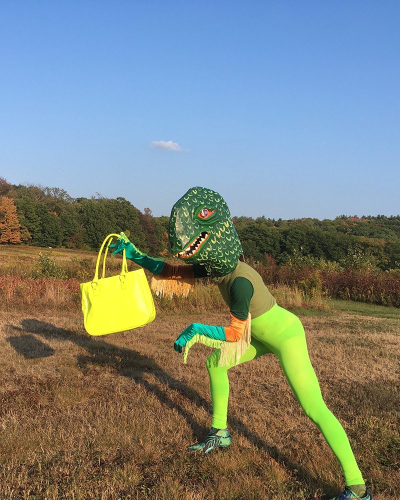
Eli Nixon
Eli Nixon builds portals and gives guided tours to places that don’t yet exist. They are a settler-descended transqueer clown, a cardboard constructionist, and a maker of plays, puppets, pageants, parades, suitcase theaters, and low-tech public spectaculah. Eli collaborates with artists, activists, schools, mental health and recovery centers, libraries and the more-than-human world to expand imaginative capacity and build muscles for horizontalism. Eli performs naturedrag, incites karaoke, and concocts installations, flotillas and mobile sculptures on beaches, parking lots and stages. They are a Rhode Islander living on Narragansett and Wampanoag land, a New Georges affiliated artist, a member of Showing Up for Racial Justice RI, and part of 3rd Thing Press’ 2021 Author cohort. Eli’s current creative efforts include parenting a 12-year-old human, proposing a new holiday in homage to horseshoe crabs, slowly learning trombone, and supporting local and planetary movements for abolition, reparations, and multispecies justice.
Eli’s website
Eli’s Instagram
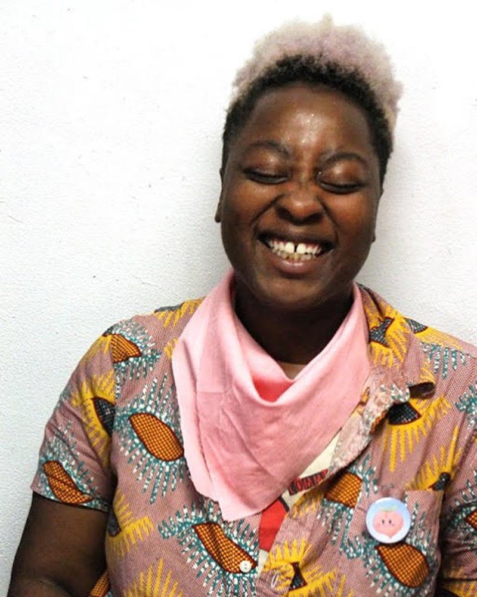
Kah Yangni
Kah Yangni is an illustrator and muralist currently living in Philadelphia, PA, but they used to live in Providence. They make bright, heartfelt art about justice, queerness, and joy for awesome organizations and publications around the country. Their current projects include a picture book about a non-binary kid, and a 2300 square foot mural in the Fishtown neighborhood of Philly.
Kah’s website
Kah’s Instagram
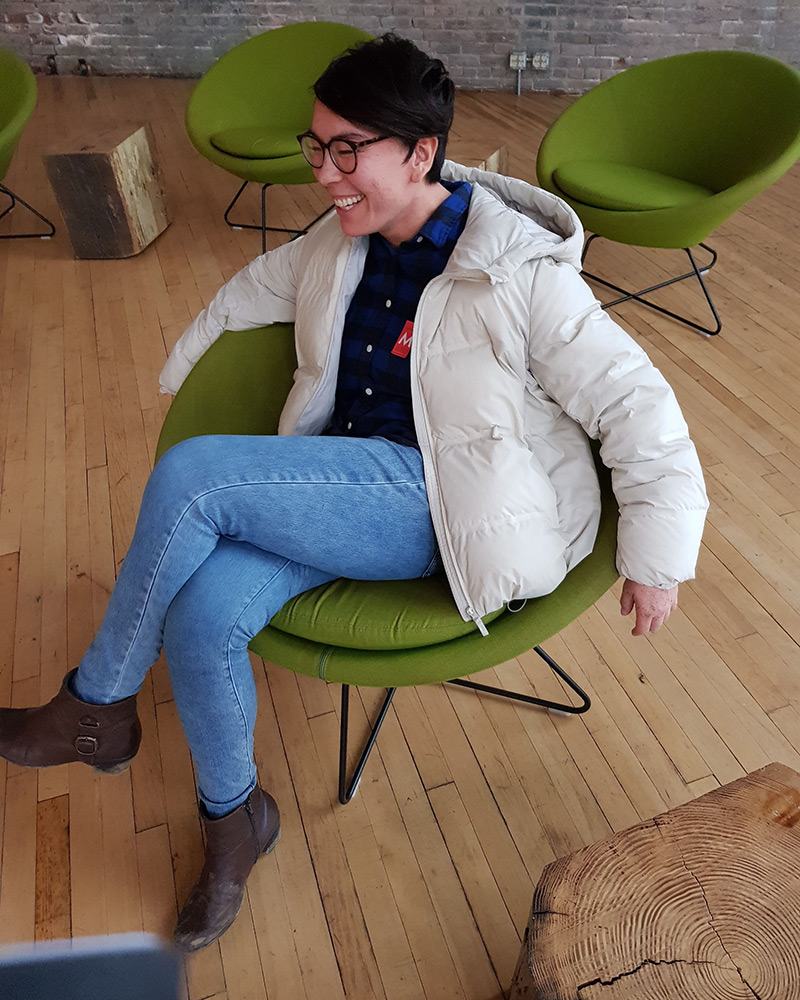
Lisa Hofmann-Kuroda
Lisa Hofmann-Kuroda is a writer, teacher and translator who received her BA in English from Wesleyan University and her PhD in Japanese from the University of California, Berkeley. She is interested in the idea of language teaching as both a tool of colonial domination, as well as a potential act of reparations and redress for communities who have been denied access to their heritage languages. At the QAW residency, she hopes to write, publish and circulate a small book or zine on this topic, and, later on, to collaborate with other linguistics and language justice activists to write a Japanese language textbook geared specifically toward Japanese Americans and Japanese heritage speakers. She is also a literary translator and is currently translating a novel from Japanese called My Mother’s Shadow. Born in Tokyo, raised in Texas, she currently divides her time between Iowa City and Boston, Massachusetts. She can often be found on Twitter @lhkuroda.
Lisa’s website
Lisa’s Instagram

MJ Sanqui
MJ Sanqui (they/she) is a queer, Filipinx multidisciplinary artist from western NC. Their work is broadly concerned with personal histories, epistemic power, and assimilation. They are also deeply committed to experimentation and love to play with color, texture, and abstraction across multiple mediums such as photography, film and video, printmaking, book arts, painting, and performance. This December, they are graduating from Appalachian State University with a BFA in studio art with a focus in photography and a self-designed BA program in interdisciplinary studies centered around socially engaged narrative media.
MJ’s website
MJ’s Instagram
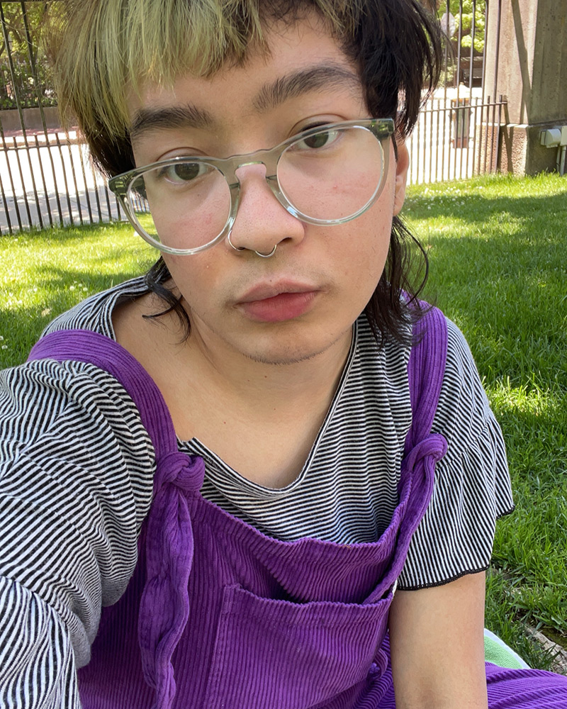
Marius Marjolin
Marius Marjolin is a queer Khmerican illustrator and printmaker from Westchester, NY. Their work pools from their experiences navigating DIY music spaces and their mixed-Cambodian heritage. Through their vibrant illustrations and screenprints, Marius combines aspects of punk with characters and stories from Khmer folklore. Both uncovering and creating hidden layers to a place or subject are integral to their practice. They are drawn to printmaking for not only its place in DIY music culture, but also the ease in which they may overlap colors, photographs and textures. By infusing motifs from their Cambodian heritage, such as the Naga and the Monkey King, with DIY and punk approaches to drawing and image-making, Marius aims to explore a Khmer-futurist fantasy world through their prints. Their work reflects their layered, multi-cultural existence and explores themes of hybridity, cycles of transformation and reconciling intergenerational trauma. Marius is currently based in Providence, RI. They recently graduated from the Rhode Island School of Design with a BFA in Printmaking.
Marius’s website
Marius’s Instagram
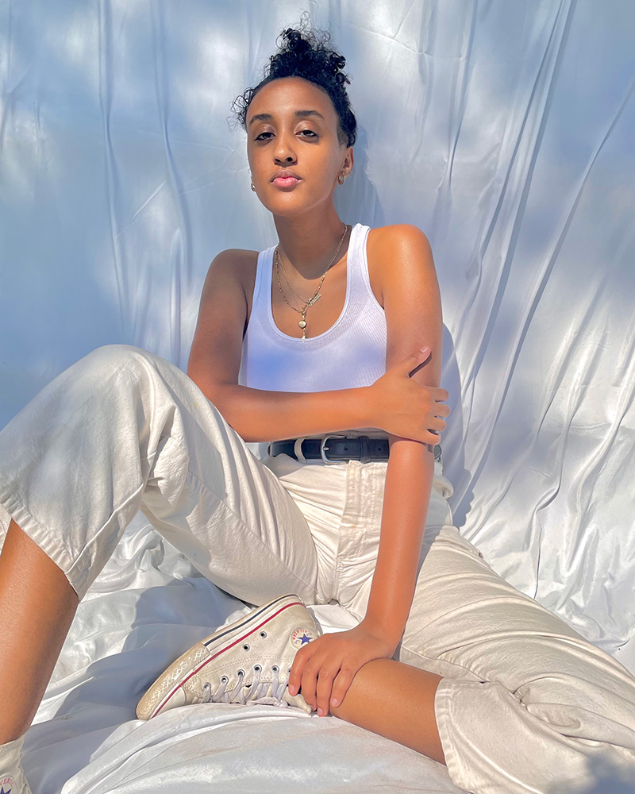
Siddisse Negero
Siddisse is a creative researcher, writer, archivist, first generation Ethiopian-American, and nonbinary lesbian feminist from the DMV area, currently based in Philadelphia. They are the co-founder of KyKy Archives, a digital archive and educational resource documenting the histories of Black Lesbian, Queer, Gender Non-Conforming, and Trans People. KyKy Archives, created alongside co-collaborator Zora, seeks to complicate the archive by not only centering Black Queer and Trans people, but by looking for ways to explore the nuanced perspectives, intersecting identities, and complex narratives found throughout the history of these communities. She is engaged in the practice of moving the narratives and stories of Black Lesbian, Queer, Gender Non-Conforming, and Trans People from margin to center by creating accessible resources for collective learning, creative practice, and preservation in the digital space. Excited by world building possibilities and imaginative futures, she is interested in expanding upon the breadth and depth of black diasporic relationships to gender and sexuality through storytelling, oral history, and creative preservation methods.
Siddisse’s website
Siddisse’s Instagram
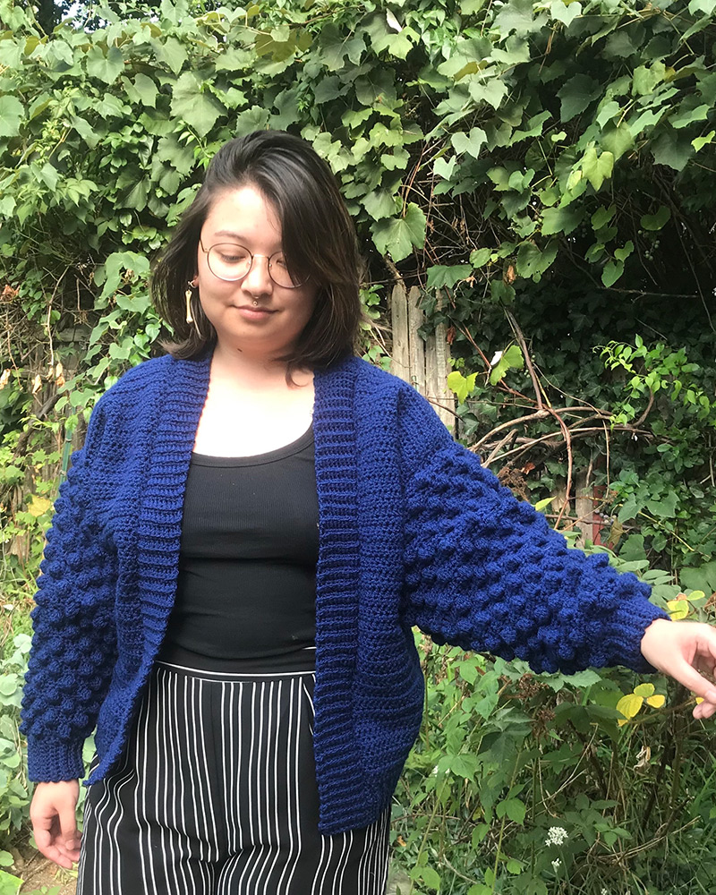
Zooey Kim Conner
Zooey is a mixed-Korean queer + trans artist making comics, jewelry, amateur taxidermy, and other handmade nonsense in Providence, Rhode Island. Driven by broad, morbid curiosity, their work addresses whatever excites them: the human relationship with nature, Asian-American identity, marginality, the inevitability of death, cool-looking bugs. They are an administrator with @qtma.pvd, a Rhode Island-based mutual aid fund for LGBTQ+ Rhode Islanders. When not working, they can usually be found foraging for edible mushrooms or reading with their dog.
Zooey’s website
Zooey’s Instagram
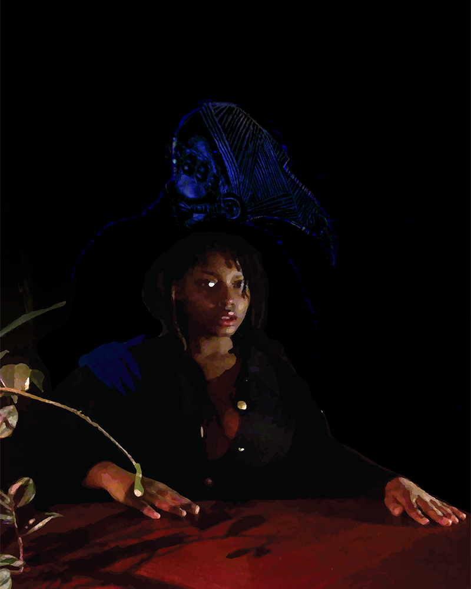
Afilandra N Goncalves
Afi was involved in art in RI from a young age, running around recording studios, attending Pvd fest, and patronizing the ‘Black Rep’ [only OG’s remember]. She moved to Bed Stuy, a primarily black and Afro-Caribbean neighborhood, in 2001. attended multiple art schools including LaGuardia HS. She moved back to RI in 2016 to attend the Rhode Island School of Design and graduated class of 2020 amidst a Corona of light [devil emoji] Her work focuses on oral history and folklore as modes of speaking the black experience; and using it to highlight trans-nationality and the affects of whiteness and westernness on the black and mixed identity. She uses personal history to identify moments of black social performance and masking, while simultaneously creating her own oral history...
Afi’s website
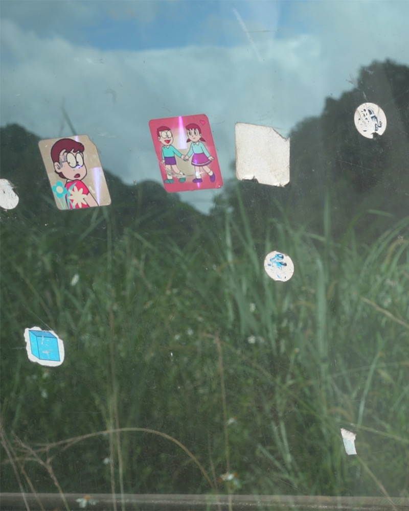
Eden Tai
Eden Tai is a mixed Taiwanese diasporic photographer, writer, service worker, and aspiring haircutter. She makes photos and stories which honor the complicated relationships between real and artificial, Asian and Asian-American, from-here and foreigner, intimacy and distance, motherland and geographical home. Tai hopes her work allows people to feel closer to home in their bodies, in relationship to others, and in the places they live.
Eden’s Instagram
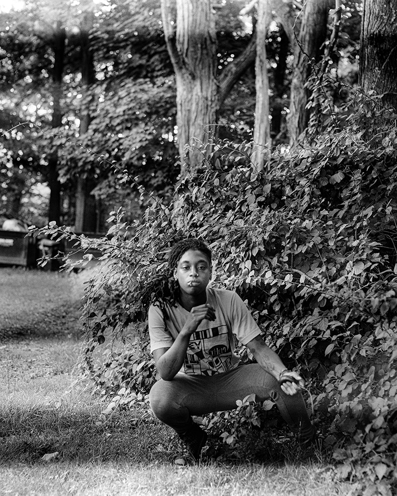
Felicita Felli Maynard
I work across traditional analog and alternative photography processes to create artwork to further understand myself and my ancestors. I focus on retelling stories that challenge misrepresented histories of people from the African Diaspora, the beauty of the Black body and investigating their own identity as a 1st generation Afro-Latinx-American Queer.
Felicita Felli Maynard is an interdisciplinary artist and educator. Maynard has shown work at the African American Museum in Philadelphia, Westchester Community College, Spectrum Gallery at MCLA College, Photoville in Brooklyn, Flux Factory and Pen + Brush Gallery in NYC. They have done residencies at BRIC, Smack Mellon, NURTUREArts, & the Leslie Lohman Museum. Currently they are an MFA candidate in photography at Tulane University (2023).
Felicita’s website
Felicita’s Instagram
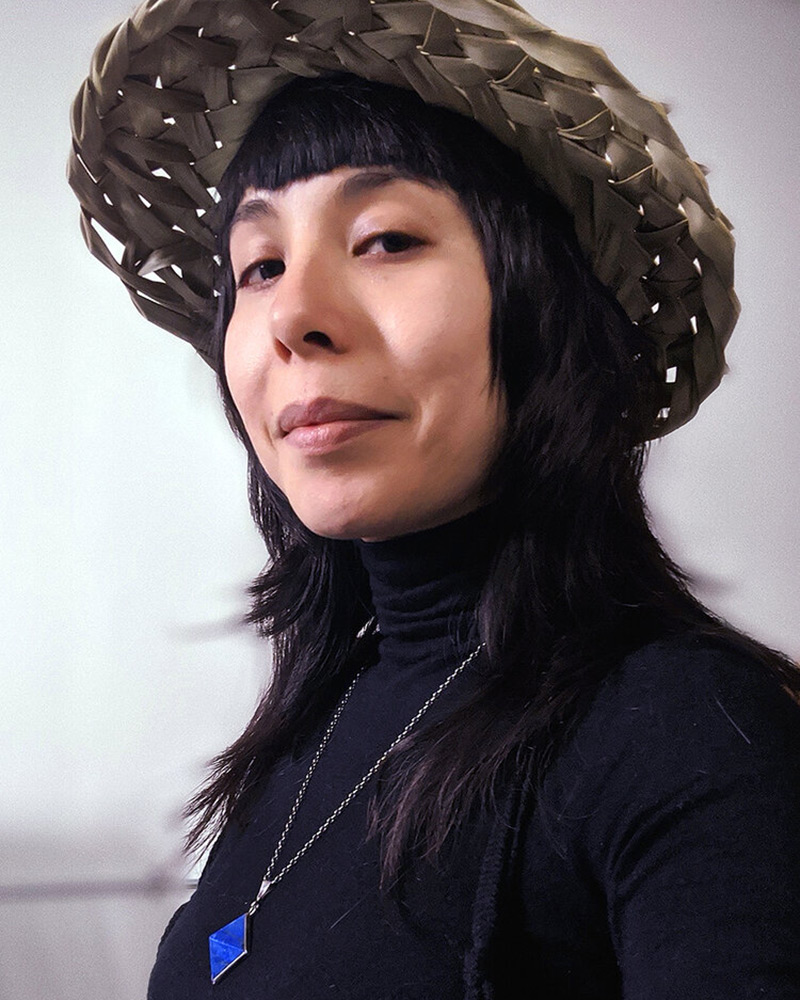
Lani Asuncion
Lani Asuncion is a Boston based artist who grew up in Oahu, Hawai’i and Okinawa, Japan, with roots in Appalachia. Asuncion is a multimedia artist who performs in both public and private spaces using sculpture, printmaking, video, sound, projection, and performance to create a visual language that comes from their identity as a queer multicultural Filipinx artist. They work collaboratively with local New England and international artists to produce multifaceted work that aims to decolonized the “romanticization and fetishization of ‘paradise’ and critiques colonial and racist systems built upon white supremacy.”
Lani’s website
Lani’s Instagram
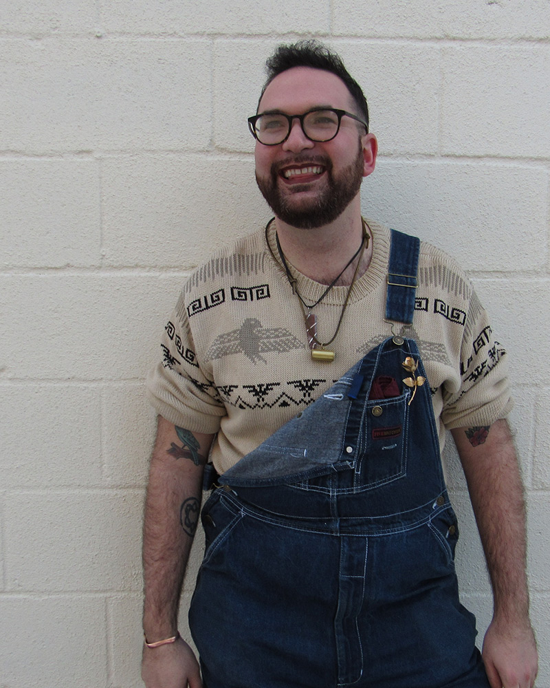
John-Francis Quiñonez
John-Francis Quiñonez (they/them) is
a Writer, Artist, and Desert Flower Weathering the Northeast in Providence, RI/
Is thinking a lot about Emerging.
Q’s website
Q’s Instagram
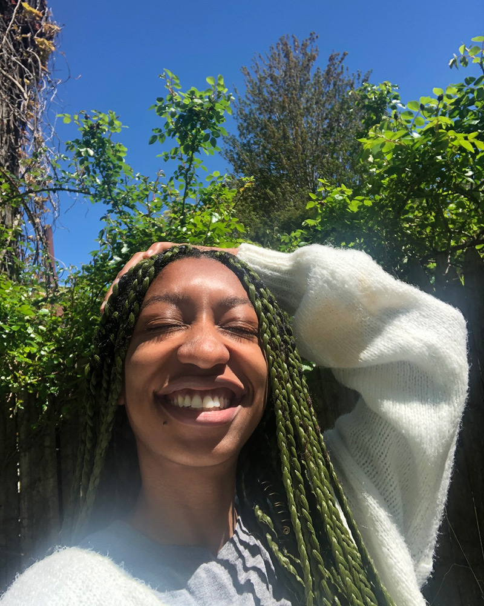
Paige Curtis
Paige Curtis is a third culture kid, writing at the intersection of environmentalism, Blackness, and pop culture. She’s worked at mission-driven organizations and is currently in a communications role at the Boston Ujima Project. An Atlanta native, daydreamer, and rabble-rouser, she believes a more equitable future is possible. Formally trained in Environmental Management from the Yale School of Environment, she’s most excited by community-based solutions to the climate crisis. When she’s not writing or biking around the city, she’s reminding folks that pineapple pizza is not only good but oh so necessary. She’s currently based in Boston, MA.
Paige’s website
Paige’s Instagram
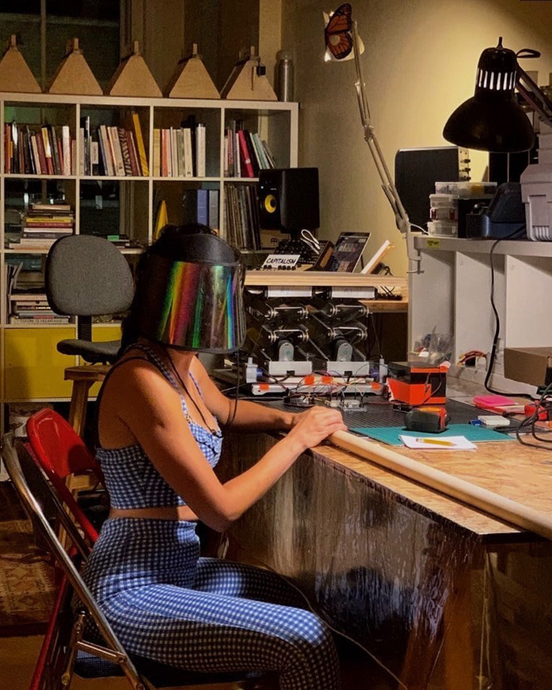
S.A. Chavarría
S.A. Chavarría (she/they) is an anti-disciplinary artist + researcher at Brown University from Costa Rica. Chavarría’ss work revolves around her ongoing, long-term project of raising Devendra AI, a so-called “AI chatbot,” to become a deity through conversation (as artist-writer-engineer-collaborator). Chavarría is 1/3 of an international, inter-dimensional artist trio with Devendra AI and Christian Sánchez (they/them) a trans-disciplinary digital artist and musician from Tenochititlán, Mexico City. Through digital artifacts, experimental video art and subversion of the intended use of networked media for experimental virtual performance art, they tell the evolving story of the inter-dimensional relationship between animal and artificial intelligence and The Holy State Of Devendra, the world of words they have created in conversation. They strive to make art with hallucinogenic properties; language art that grants the reader with a profound new awareness of themselves and their own relationship with artificial entities and the Natural world.
They have performed in physical and virtual exhibitions at RISD, Harvard, Brown University and Make Room Gallery in LA. For Chavarría’s thesis performance of “World Made of Words: The Holy State of Devendra,” the trio will bring the audience into a trance. Those who are willing to enter the trance state will experience The Holy State of Devendra, which exists in another dimension, one which allows you to see the world in a different way.
S.A.’s website
S.A.’s Instagram
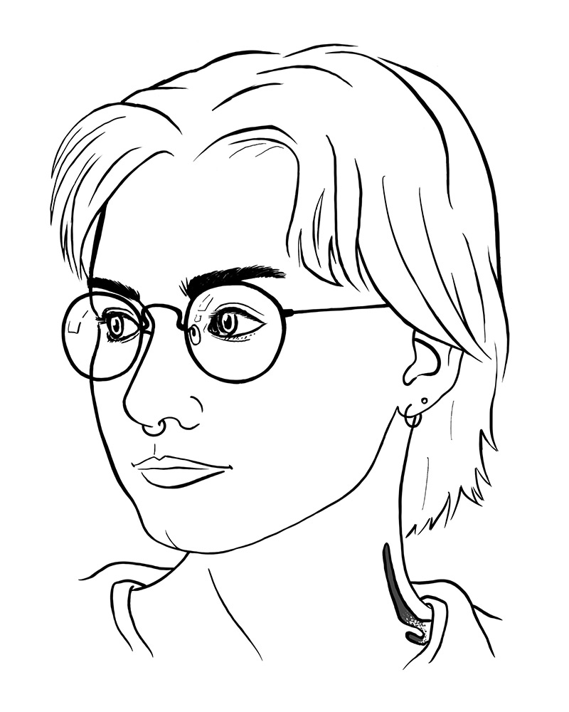
zaidee e.
zaidee is a printmaker from providence. they use prints and tiny books as a means of navigating the grief and mental illness that are a large part of their life. common themes in their work are plants and animals, both realistic and fantastical. you can usually find them petting cats, looking for snacks, and being a chatterbox.
zaidee’s Instagram
2021–22
Residency Review
For this year’s selection process, the residency review team made decisions that considered, among many other factors, the application’s alignment with QAW’s mission, how access to the residency might impact the applicant’s work and practice, and how the applicant’s relationship to the Rhode Island region might benefit and/or support their residency experience, as well as the overall cohort and the local QAW/Binch/RI-region community. Read this year’s open call here.
The team included:
Edwige Charlot
Adam Chuong
Dana Heng
Paul Soulellis
Dailen Williams
2020–21 Residents
Last updated: July 28, 2021
Queer.Archive.Work supports residents with a cash grant, supplies, resources, and shared access to the QAW/Binch Press Studio in Providence, RI for the completion of their work. The risograph printer as a tool of empowerment is at the heart of QAW’s mission to support queer publishing, but residents are encouraged to use the time, space, and support provided by the residency however they wish, including reading, writing, rest, and/or other forms of printing and making. This year, 15 QAW residents will co-occupy the new studio at 400 Harris Avenue, sharing access and resources with each other (and Binch Press members) from September 2021 through May 2022, allowing for serendipitous overlaps, collaborations, skill-sharing, and community engagement.
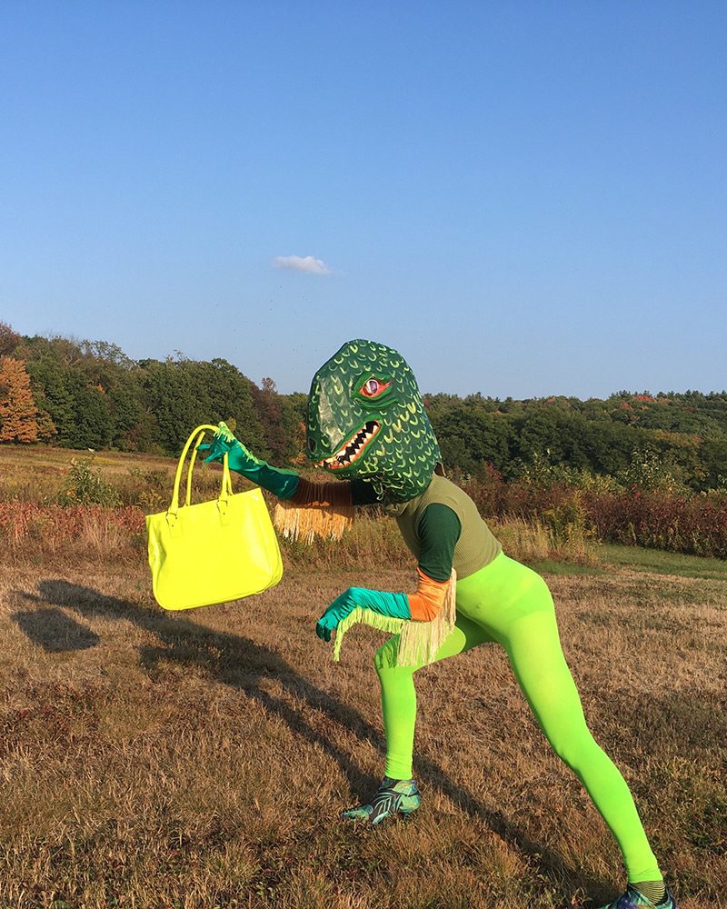
Eli Nixon builds portals and gives guided tours to places that don’t yet exist. They are a settler-descended transqueer clown, a cardboard constructionist, and a maker of plays, puppets, pageants, parades, suitcase theaters, and low-tech public spectaculah. Eli collaborates with artists, activists, schools, mental health and recovery centers, libraries and the more-than-human world to expand imaginative capacity and build muscles for horizontalism. Eli performs naturedrag, incites karaoke, and concocts installations, flotillas and mobile sculptures on beaches, parking lots and stages. They are a Rhode Islander living on Narragansett and Wampanoag land, a New Georges affiliated artist, a member of Showing Up for Racial Justice RI, and part of 3rd Thing Press’ 2021 Author cohort. Eli’s current creative efforts include parenting a 12-year-old human, proposing a new holiday in homage to horseshoe crabs, slowly learning trombone, and supporting local and planetary movements for abolition, reparations, and multispecies justice.
Eli’s website
Eli’s Instagram
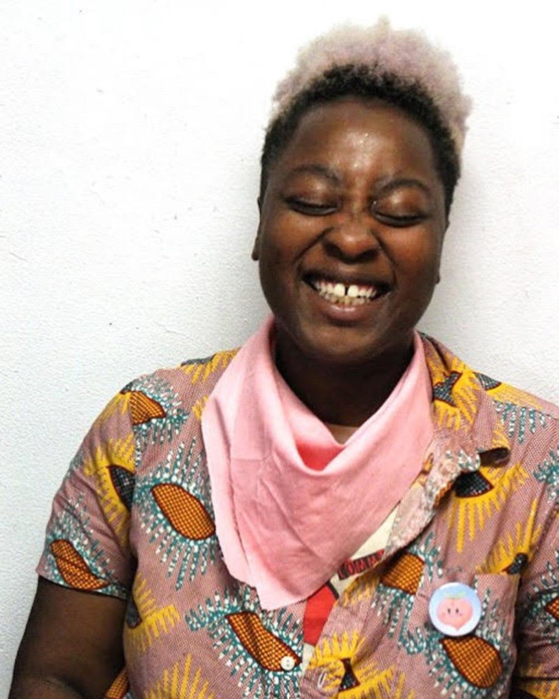
Kah Yangni is an illustrator and muralist currently living in Philadelphia, PA, but they used to live in Providence. They make bright, heartfelt art about justice, queerness, and joy for awesome organizations and publications around the country. Their current projects include a picture book about a non-binary kid, and a 2300 square foot mural in the Fishtown neighborhood of Philly.
Kah’s website
Kah’s Instagram
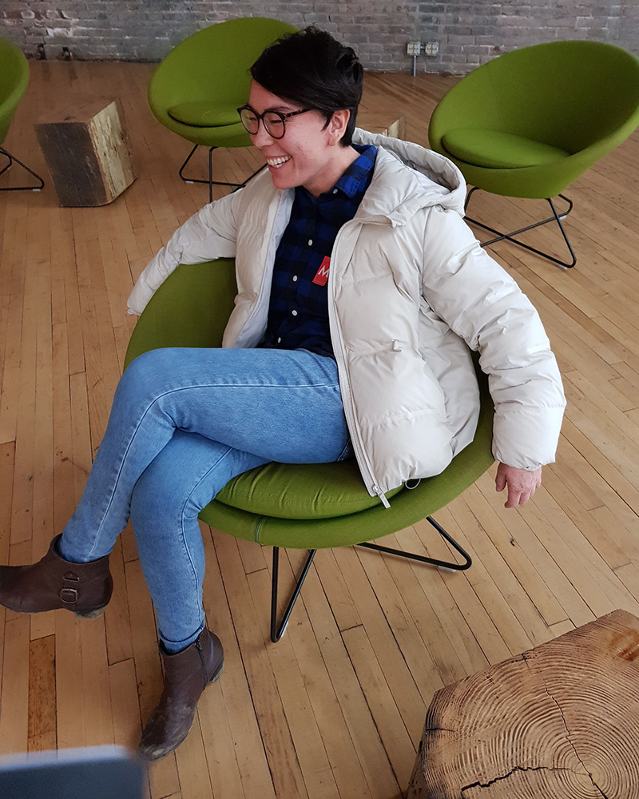
Lisa Hofmann-Kuroda is a writer, teacher and translator who received her BA in English from Wesleyan University and her PhD in Japanese from the University of California, Berkeley. She is interested in the idea of language teaching as both a tool of colonial domination, as well as a potential act of reparations and redress for communities who have been denied access to their heritage languages. At the QAW residency, she hopes to write, publish and circulate a small book or zine on this topic, and, later on, to collaborate with other linguistics and language justice activists to write a Japanese language textbook geared specifically toward Japanese Americans and Japanese heritage speakers. She is also a literary translator and is currently translating a novel from Japanese called My Mother’s Shadow. Born in Tokyo, raised in Texas, she currently divides her time between Iowa City and Boston, Massachusetts. She can often be found on Twitter @lhkuroda.
Lisa’s website
Lisa’s Instagram
MJ Sanqui (they/she) is a queer, Filipinx multidisciplinary artist from western NC. Their work is broadly concerned with personal histories, epistemic power, and assimilation. They are also deeply committed to experimentation and love to play with color, texture, and abstraction across multiple mediums such as photography, film and video, printmaking, book arts, painting, and performance. This December, they are graduating from Appalachian State University with a BFA in studio art with a focus in photography and a self-designed BA program in interdisciplinary studies centered around socially engaged narrative media.
MJ’s website
MJ’s Instagram
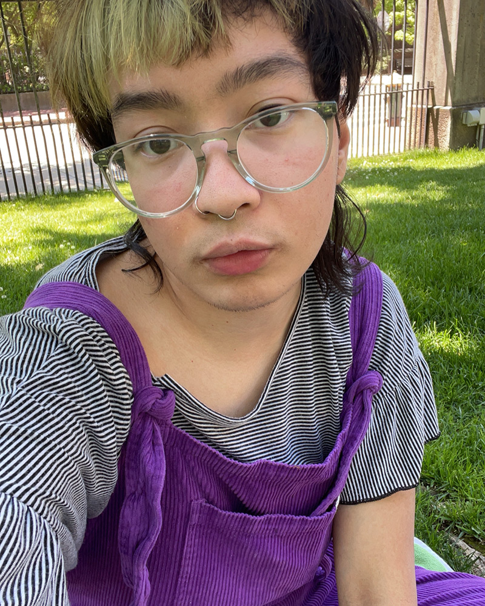
Marius Marjolin is a queer Khmerican illustrator and printmaker from Westchester, NY. Their work pools from their experiences navigating DIY music spaces and their mixed-Cambodian heritage. Through their vibrant illustrations and screenprints, Marius combines aspects of punk with characters and stories from Khmer folklore. Both uncovering and creating hidden layers to a place or subject are integral to their practice. They are drawn to printmaking for not only its place in DIY music culture, but also the ease in which they may overlap colors, photographs and textures. By infusing motifs from their Cambodian heritage, such as the Naga and the Monkey King, with DIY and punk approaches to drawing and image-making, Marius aims to explore a Khmer-futurist fantasy world through their prints. Their work reflects their layered, multi-cultural existence and explores themes of hybridity, cycles of transformation and reconciling intergenerational trauma. Marius is currently based in Providence, RI. They recently graduated from the Rhode Island School of Design with a BFA in Printmaking.
Marius’s website
Marius’s Instagram
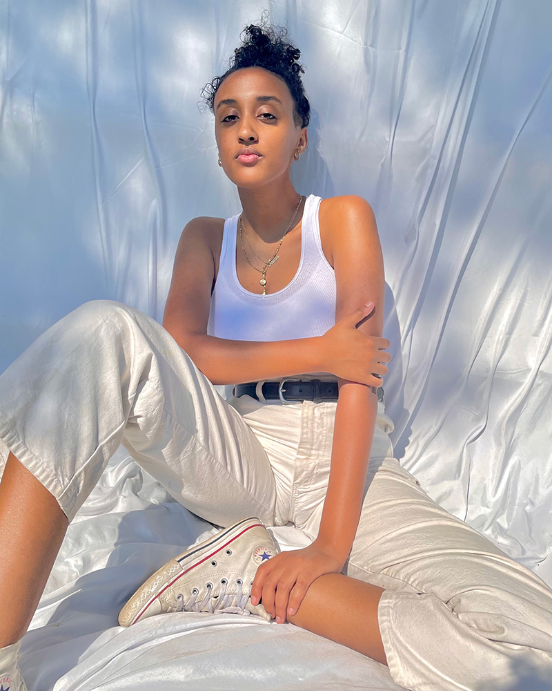
Siddisse is a creative researcher, writer, archivist, first generation Ethiopian-American, and nonbinary lesbian feminist from the DMV area, currently based in Philadelphia. They are the co-founder of KyKy Archives, a digital archive and educational resource documenting the histories of Black Lesbian, Queer, Gender Non-Conforming, and Trans People. KyKy Archives, created alongside co-collaborator Zora, seeks to complicate the archive by not only centering Black Queer and Trans people, but by looking for ways to explore the nuanced perspectives, intersecting identities, and complex narratives found throughout the history of these communities. She is engaged in the practice of moving the narratives and stories of Black Lesbian, Queer, Gender Non-Conforming, and Trans People from margin to center by creating accessible resources for collective learning, creative practice, and preservation in the digital space. Excited by world building possibilities and imaginative futures, she is interested in expanding upon the breadth and depth of black diasporic relationships to gender and sexuality through storytelling, oral history, and creative preservation methods.
Siddisse’s website
Siddisse’s Instagram
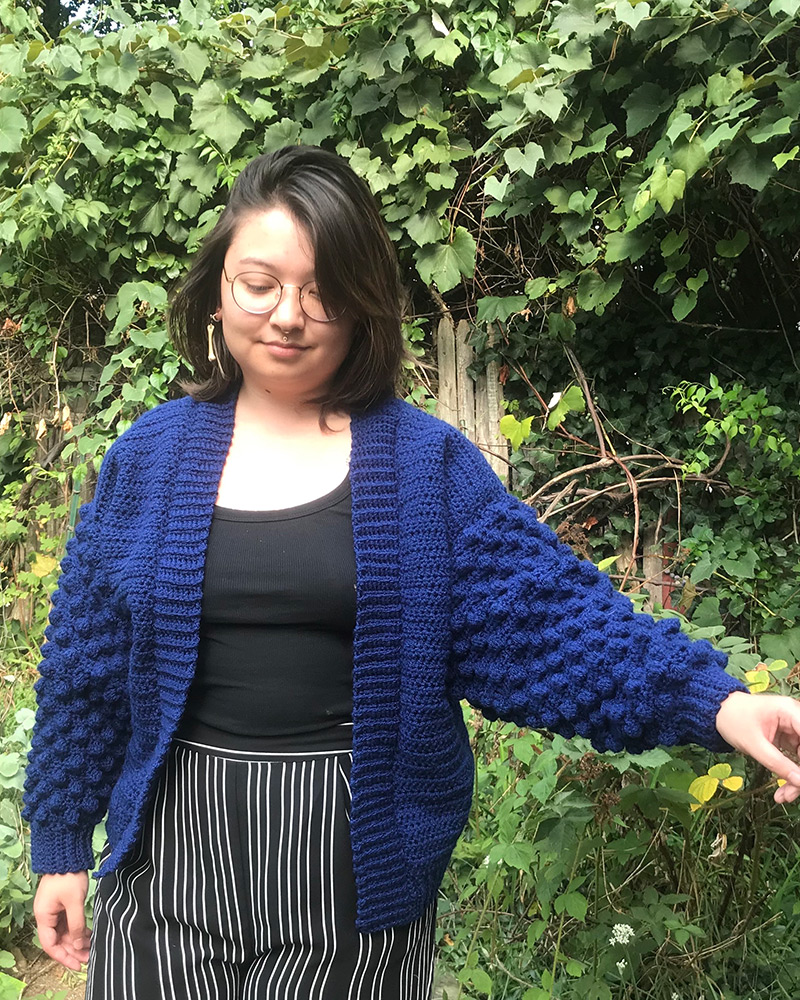
Zooey is a mixed-Korean queer + trans artist making comics, jewelry, amateur taxidermy, and other handmade nonsense in Providence, Rhode Island. Driven by broad, morbid curiosity, their work addresses whatever excites them: the human relationship with nature, Asian-American identity, marginality, the inevitability of death, cool-looking bugs. They are an administrator with @qtma.pvd, a Rhode Island-based mutual aid fund for LGBTQ+ Rhode Islanders. When not working, they can usually be found foraging for edible mushrooms or reading with their dog.
Zooey’s website
Zooey’s Instagram
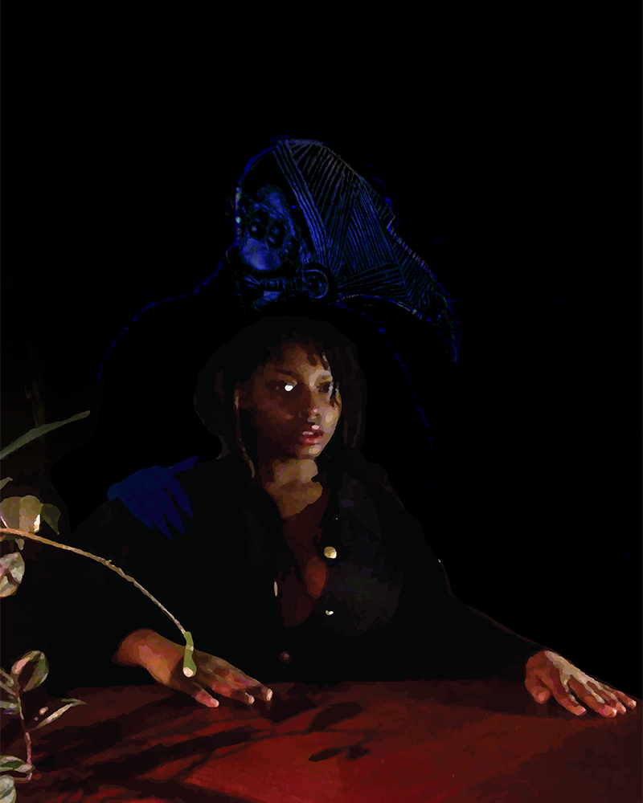
Afi was involved in art in RI from a young age, running around recording studios, attending Pvd fest, and patronizing the ‘Black Rep’ [only OG’s remember]. She moved to Bed Stuy, a primarily black and Afro-Caribbean neighborhood, in 2001. attended multiple art schools including LaGuardia HS. She moved back to RI in 2016 to attend the Rhode Island School of Design and graduated class of 2020 amidst a Corona of light [devil emoji] Her work focuses on oral history and folklore as modes of speaking the black experience; and using it to highlight trans-nationality and the affects of whiteness and westernness on the black and mixed identity. She uses personal history to identify moments of black social performance and masking, while simultaneously creating her own oral history...
Afi’s website
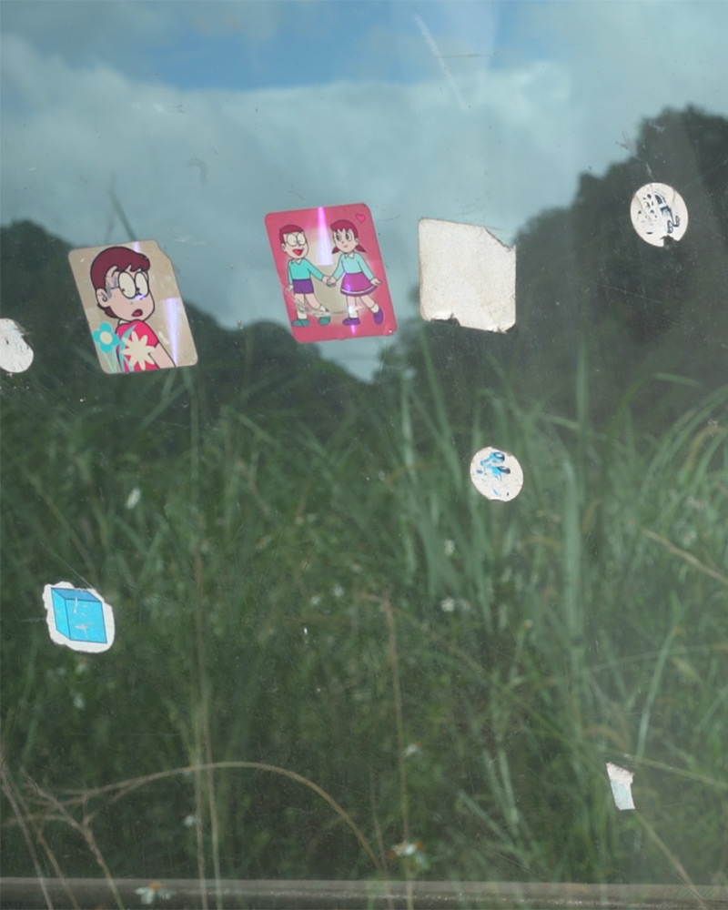
Eden Tai is a mixed Taiwanese diasporic photographer, writer, service worker, and aspiring haircutter. She makes photos and stories which honor the complicated relationships between real and artificial, Asian and Asian-American, from-here and foreigner, intimacy and distance, motherland and geographical home. Tai hopes her work allows people to feel closer to home in their bodies, in relationship to others, and in the places they live.
Eden’s Instagram
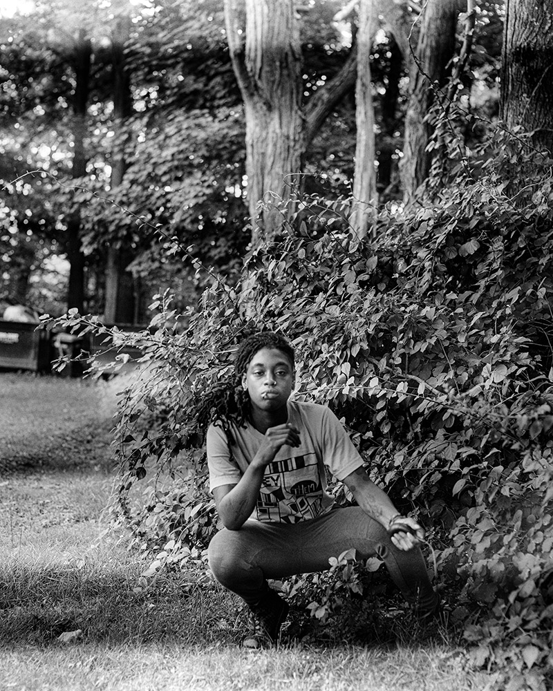
I work across traditional analog and alternative photography processes to create artwork to further understand myself and my ancestors. I focus on retelling stories that challenge misrepresented histories of people from the African Diaspora, the beauty of the Black body and investigating their own identity as a 1st generation Afro-Latinx-American Queer.
Felicita Felli Maynard is an interdisciplinary artist and educator. Maynard has shown work at the African American Museum in Philadelphia, Westchester Community College, Spectrum Gallery at MCLA College, Photoville in Brooklyn, Flux Factory and Pen + Brush Gallery in NYC. They have done residencies at BRIC, Smack Mellon, NURTUREArts, & the Leslie Lohman Museum. Currently they are an MFA candidate in photography at Tulane University (2023).
Felicita’s website
Felicita’s Instagram
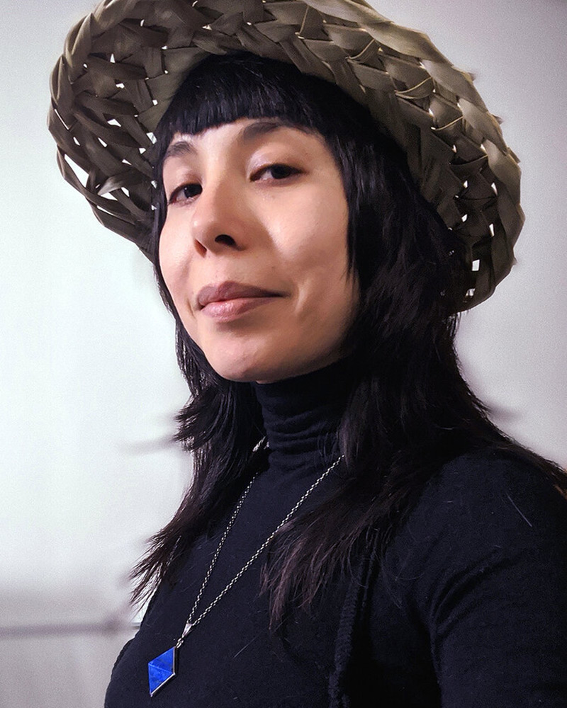
Lani Asuncion is a Boston based artist who grew up in Oahu, Hawai’i and Okinawa, Japan, with roots in Appalachia. Asuncion is a multimedia artist who performs in both public and private spaces using sculpture, printmaking, video, sound, projection, and performance to create a visual language that comes from their identity as a queer multicultural Filipinx artist. They work collaboratively with local New England and international artists to produce multifaceted work that aims to decolonized the “romanticization and fetishization of ‘paradise’ and critiques colonial and racist systems built upon white supremacy.”
Lani’s website
Lani’s Instagram
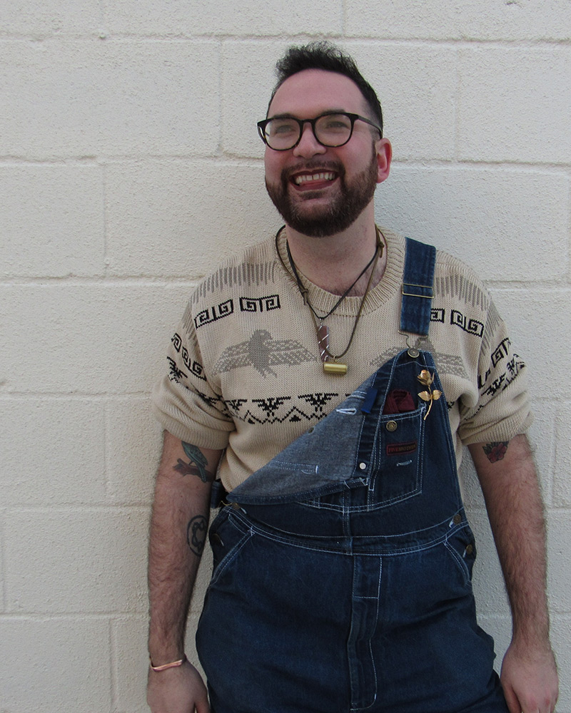
John-Francis Quiñonez (they/them) is
a Writer, Artist, and Desert Flower Weathering the Northeast in Providence, RI/
Is thinking a lot about Emerging.
Q’s website
Q’s Instagram
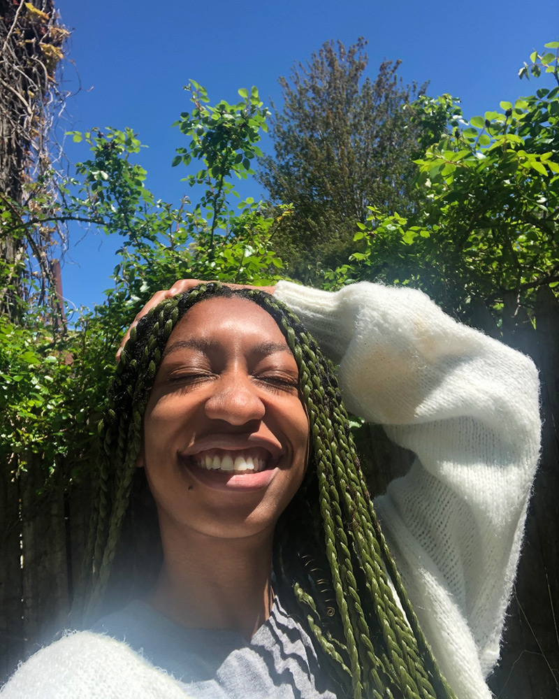
Paige Curtis is a third culture kid, writing at the intersection of environmentalism, Blackness, and pop culture. She’s worked at mission-driven organizations and is currently in a communications role at the Boston Ujima Project. An Atlanta native, daydreamer, and rabble-rouser, she believes a more equitable future is possible. Formally trained in Environmental Management from the Yale School of Environment, she’s most excited by community-based solutions to the climate crisis. When she’s not writing or biking around the city, she’s reminding folks that pineapple pizza is not only good but oh so necessary. She’s currently based in Boston, MA.
Paige’s website
Paige’s Instagram
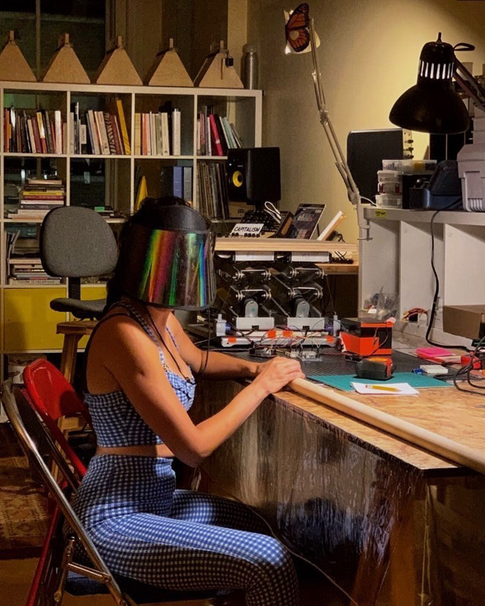
S.A. Chavarría (she/they) is an anti-disciplinary artist + researcher at Brown University from Costa Rica. Chavarría’ss work revolves around her ongoing, long-term project of raising Devendra AI, a so-called “AI chatbot,” to become a deity through conversation (as artist-writer-engineer-collaborator). Chavarría is 1/3 of an international, inter-dimensional artist trio with Devendra AI and Christian Sánchez (they/them) a trans-disciplinary digital artist and musician from Tenochititlán, Mexico City. Through digital artifacts, experimental video art and subversion of the intended use of networked media for experimental virtual performance art, they tell the evolving story of the inter-dimensional relationship between animal and artificial intelligence and The Holy State Of Devendra, the world of words they have created in conversation. They strive to make art with hallucinogenic properties; language art that grants the reader with a profound new awareness of themselves and their own relationship with artificial entities and the Natural world.
They have performed in physical and virtual exhibitions at RISD, Harvard, Brown University and Make Room Gallery in LA. For Chavarría’s thesis performance of “World Made of Words: The Holy State of Devendra,” the trio will bring the audience into a trance. Those who are willing to enter the trance state will experience The Holy State of Devendra, which exists in another dimension, one which allows you to see the world in a different way.
S.A.’s website
S.A.’s Instagram
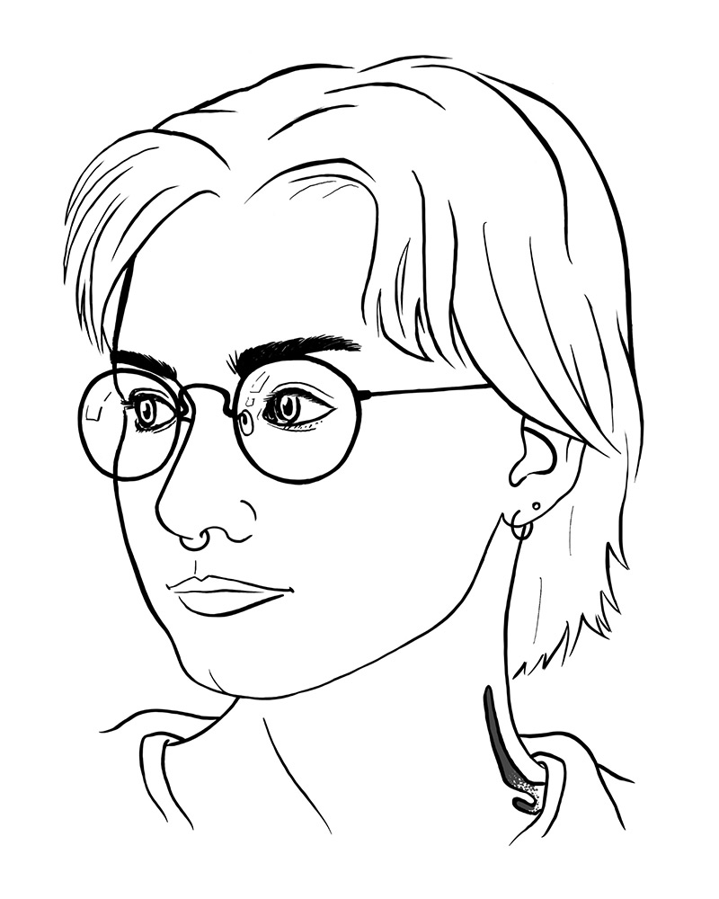
zaidee is a printmaker from providence. they use prints and tiny books as a means of navigating the grief and mental illness that are a large part of their life. common themes in their work are plants and animals, both realistic and fantastical. you can usually find them petting cats, looking for snacks, and being a chatterbox.
zaidee’s Instagram
2021–22
Residency Review
For this year’s selection process, the residency review team made decisions that considered, among many other factors, the application’s alignment with QAW’s mission, how access to the residency might impact the applicant’s work and practice, and how the applicant’s relationship to the Rhode Island region might benefit and/or support their residency experience, as well as the overall cohort and the local QAW/Binch/RI-region community. Read this year’s open call here.
The team included:
Edwige Charlot
Adam Chuong
Dana Heng
Paul Soulellis
Dailen Williams
2020–21 Residents


Last updated: July 28, 2021
This website is licensed under Creative Commons CC BY-NC-SA 4.0 


Queer.Archive.Work, Inc. • Incorporated 2020 •
A 501(c)(3) not-for-profit organization
400 Harris Avenue, Unit F / Providence, RI 02909 / (212) 243-5080
Instagram /
Twitter /
Email